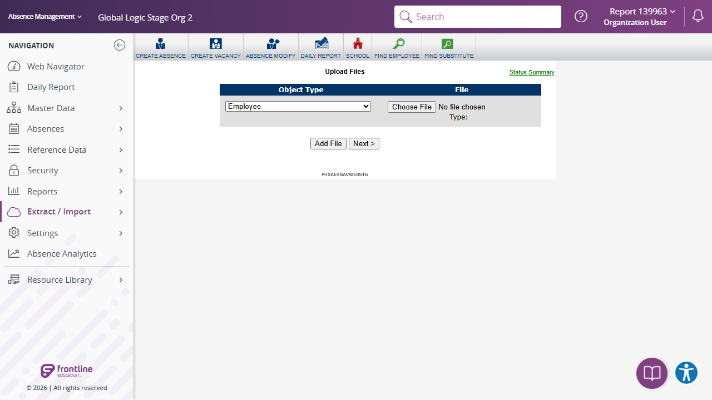

Execution 3 · Cross-Application Navigation Matrix
tests/navigation/cross-application-navigation-matrix.md · Video 2:00–5:08
3
Execution
2:00–5:08
Continuous-video range
Unattended safe mode
Execution mode
Scenario outcome
All cross-application routes, global searches, zero-result handling, and return navigation completed.
Continuous video evidence
Screenshot evidence
{kind=link}

Complete test structure
Source: tests/navigation/cross-application-navigation-matrix.md
# AES Cross-Application Navigation Matrix ## Execution directive Read `instructions/project-instructions.md`, `instructions/application-details.md`, `instructions/test-data.md`, and `config/aes-stage.json` completely. Execute all flows directly in Chrome through Playwright MCP; do not generate browser-automation source code. Resolve the password using the credential-source rules below without displaying or reporting it. Generate execution results as one standalone HTML report under `reports/navigation/cross-application-navigation-matrix/`; keep results out of this scenario file. ## Credential sources 1. Read the Stage URL and username from `config/aes-stage.json`. 2. Use `AES_STAGE_PASSWORD` when the environment variable is configured. 3. Otherwise, read `password` from `.secrets/aes-stage.credentials.json`. 4. If neither password source is available or the local value is still a placeholder, mark all flows **BLOCKED**, generate the HTML report, and stop before opening the browser. 5. Never print, echo, log, screenshot, report, or copy the resolved password into another file. The local credentials file is intentionally excluded from Git. ## Scope and route rules - Start at the URL configured in `config/aes-stage.json` (currently `https://aesstage.flqa.net`). - Approved Stage hosts are `aesstage.flqa.net`, `idgatewayawsstage.flqa.net`, and `adminwebstage2.flqa.net`. - The classic Extract / Import → Import Data experience currently uses `/mvc.aspx/dataimport`; do not require a `.asp` URL. - Angular Daily Report uses `/reports/absence/daily-report` on the approved Stage admin host. - Search term: `report`. - Accept either matching records or an explicit empty state containing the result count and `No Records Found`. - Wait for destination navigation to become visibly enabled before clicking it; do not use arbitrary reloads to bypass normal page readiness. - Restore changed dropdowns, checkboxes, dates, filters, and view selections. - Do not select a file, continue an import, print, save, add a record, or perform any data-changing action. ## Shared interaction checks ### Import Data controls 1. Confirm `Upload Files`, Object Type, Status Summary, Choose File, Add File, and Next are visible and enabled. 2. Confirm Object Type contains selectable options. 3. Change Object Type to `School`, then restore it to `Employee`. 4. Confirm the native file input is available without opening the file picker. ### Angular Daily Report controls 1. Confirm the `Daily Report` heading, date, filters, totals, and global Search are visible. 2. Confirm Select a Report and Group By dropdowns are enabled and contain options. 3. Change Group By to `Employee Type`, then restore it to `School`. 4. Toggle Absences and Vacancies one at a time, restoring both to their original state. 5. Switch from List to Tab and back to List. 6. Select Next Day and then Previous Day to restore the original date. 7. Open and close the Schools and Employee Types filters without changing their selections. 8. Confirm report Search and Print are visible and enabled. Execute report Search only; do not launch Print. ### Global Search controls 1. Confirm the submitted term remains `report` on the Search page. 2. Confirm either matching records or the explicit zero-result state is displayed. 3. Change Active/Inactive/Both from `Active` to `Both`, then restore it to `Active`. 4. Confirm the page Search input, Add, Web Navigator, Daily Report, and Extract / Import navigation are enabled. 5. Clear the page Search input and press Enter. - Expected: Empty input is handled safely, the page remains responsive, and no application error appears. ## Flow 1 — Import Data to Angular Daily Report 1. Sign in and reach React Web Navigator Home. 2. Navigate through `Extract / Import` → `Import Data`. 3. Confirm `/mvc.aspx/dataimport` and run the shared Import Data checks. 4. Select the visible legacy `DAILY REPORT` shortcut. 5. Wait for Angular Daily Report to finish loading. 6. Confirm `/reports/absence/daily-report` and run the shared Daily Report checks. ## Flow 2 — Angular Daily Report to Search to React Home 1. Start on Angular Daily Report and run the shared Daily Report checks. 2. Enter `report` in header global Search and press Enter. 3. Run the shared Global Search checks. 4. Wait for `Web Navigator` to become visibly enabled, then select it. 5. Confirm React Web Navigator Home loads at `/navigator/Dashboard.aspx`. 6. Confirm global Search, Daily Report, and Extract / Import navigation remain enabled. ## Flow 3 — React Home to Search to Angular Daily Report 1. Start on React Web Navigator Home. 2. Confirm global Search, Daily Report, and Extract / Import navigation are enabled. 3. Enter `report` in header global Search and press Enter. 4. Run the shared Global Search checks. 5. Wait for `Daily Report` navigation to become visibly enabled, then select it. 6. Confirm Angular Daily Report loads and run the shared Daily Report checks. ## Flow 4 — Import Data to Search and back to Import Data 1. Navigate through `Extract / Import` → `Import Data`. 2. Run the shared Import Data checks. 3. Enter `report` in header global Search and press Enter. 4. Run the shared Global Search checks. 5. Wait for `Extract / Import` to become visibly enabled, open it, and select `Import Data`. 6. Confirm `/mvc.aspx/dataimport`, then repeat the shared Import Data checks. ## Additional resilience checks 1. Complete the sequence Import Data → Daily Report → Search → React Home → Search → Daily Report → Import Data in one session. - Expected: Every destination loads without stale content, authentication loss, or unapproved redirects. 2. After each zero-result search, wait for side navigation to be visibly ready before selecting the next destination. - Expected: Navigation works without a manual page reload. 3. Confirm all pages remain responsive after changed controls are restored. - Expected: No unhandled error, disabled primary action, or persisted test state remains. ## Result classification - **PASS:** Every navigation destination, accepted search outcome, safe interaction, restoration, and resilience check succeeds. - **FAIL:** A destination fails, a control is not usable, the search outcome is ambiguous, restoration fails, or an application error occurs. - **BLOCKED:** Authentication, permissions, missing controls, or safety restrictions prevent execution. ## Reporting Create `reports/navigation/cross-application-navigation-matrix/cross-application-navigation-matrix-<YYYYMMDD-HHMMSS>.html` as a polished standalone report containing scenario totals, detailed results, interaction evidence, accepted zero-result behavior, failures with reproduction steps, route observations, and safety/cleanup status. Create the report directory when it does not exist. At the top of the report, show separate summary cards for: - Total flows - Flows passed - Flows failed - Flows blocked - Detailed checks passed/failed, shown separately from flow totals Include a visually distinct **Scenario outcomes** section containing one card for each of the four flows. Every card must contain: 1. Flow number and complete flow name 2. A short actual-result summary stating whether the navigation and interaction checks worked 3. A prominent final status: **PASS**, **FAIL**, or **BLOCKED** Example: > **1 · Import Data → Angular Daily Report** > > Import controls and Angular report controls were interactive; navigation completed. > > **PASS** Determine each flow independently. Mark a flow **PASS** only when all required steps and shared checks used by that flow pass. Mark it **FAIL** when any required step fails, and **BLOCKED** when it cannot be completed safely. The overall report status is **PASS** only when every flow passes. Never include credentials or authentication secrets.
Safety and cleanup
No password, token, cookie, or authentication fragment is included. Unattended safe mode did not create, update, or delete persistent staging records.